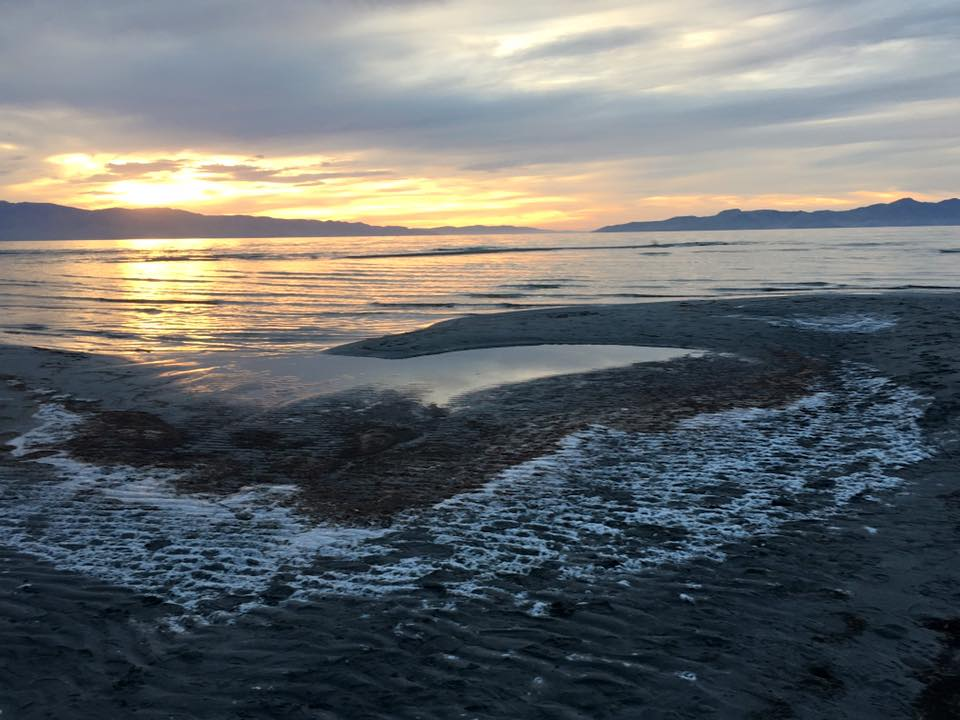
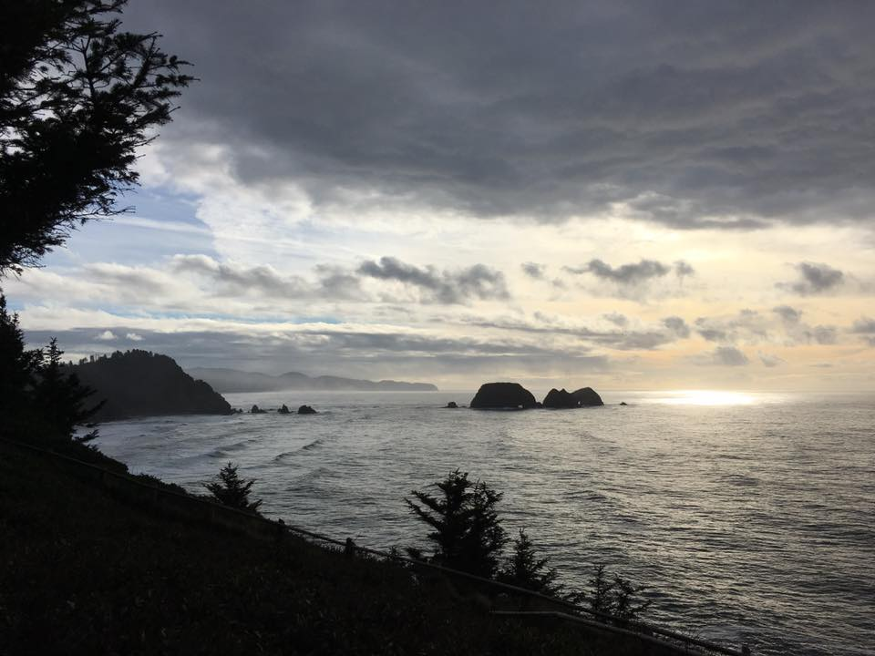
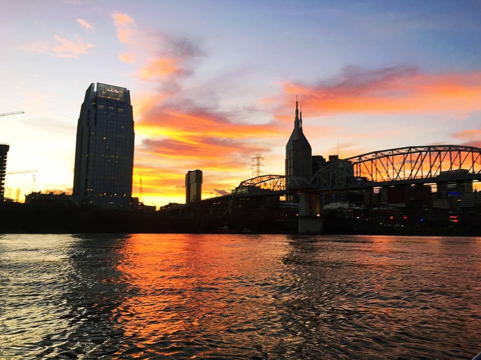

Grand Canyon, Northern Rim: I hiked a small portion, 8 miles round trip straight down then straight UP.
Before the GC, my boyfriend and I stomped around in Zion National Park in Utah for 3 days.
At sunset, the Great Salt Lake is a magical place. We stopped here on our drive from Portland to Zion. Cue in Band of Horses...
Spent a quiet and peaceful Christmas Day 2016 hiking around the Cape Meares Lighthouse and snapped a gorgeous view of Oceanside, OR.
I lived in Nashville TN before moving to Portland and still hold that city near and dear to my heart.
Yeah I've got those too.
Thanks for visiting!